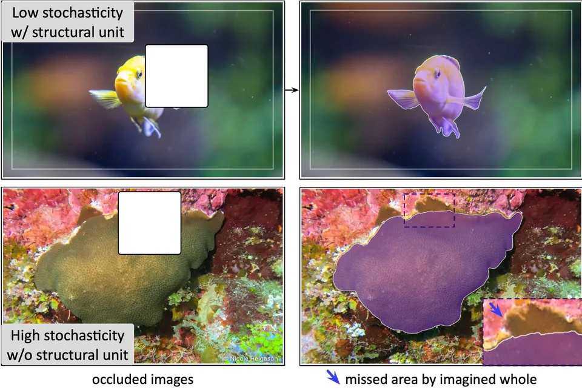
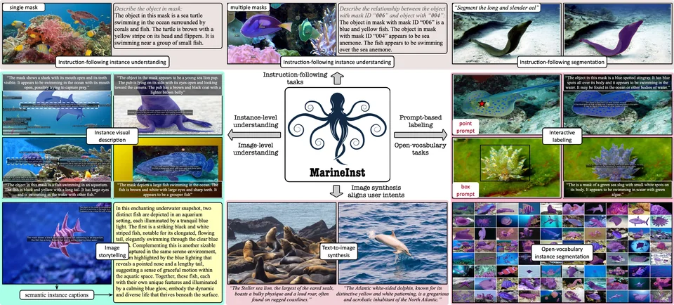
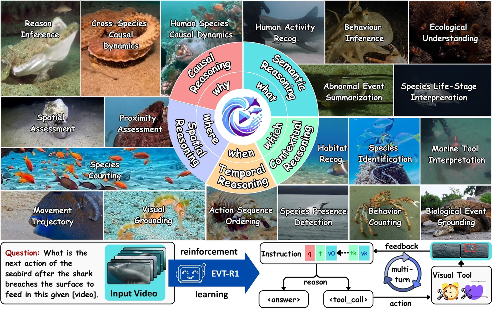
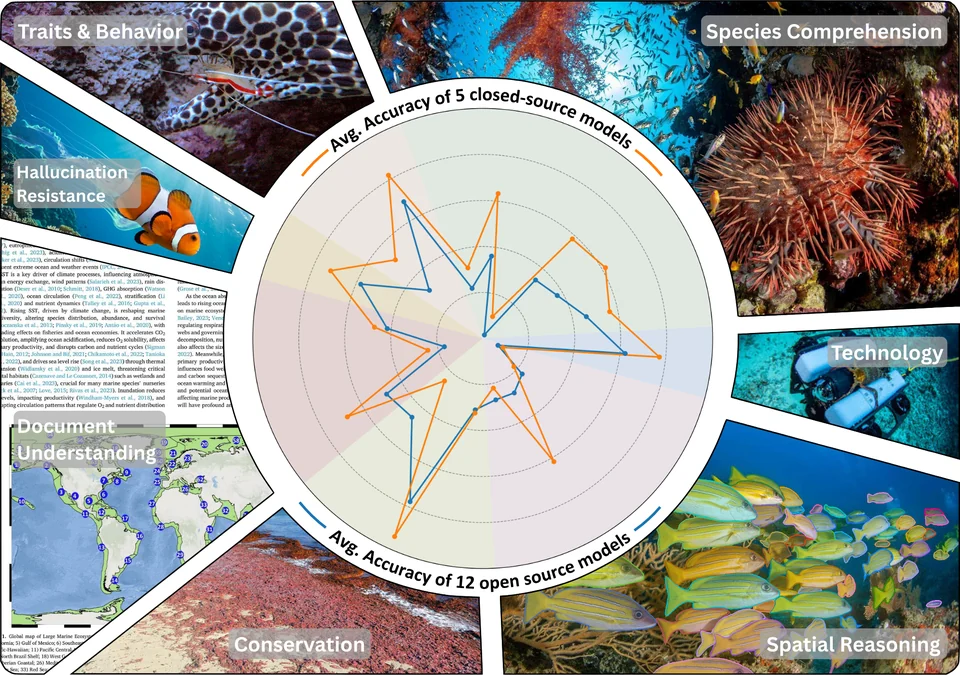

RESEARCH DIRECTION 01
Intelligent Ocean Observation & Understanding
See the ocean in new ways.
This programme develops marine AI, computer vision, multimodal sensing, 3D/4D mapping, foundation models, resilient communications and environmental intelligence. It builds persistent observation systems and shared data resources that turn heterogeneous visual, acoustic, physical, chemical and biological measurements into actionable understanding of coastal environments.
SUB-DIRECTION 01
Marine AI & Foundation Models
We build general-purpose models that see marine life the way specialists do. They find, outline and classify organisms and habitats across reefs, species and imaging conditions, and adapt to new tasks with little or no new labelling.
What we study
Detection & segmentation
Outlining corals, fish and other organisms, down to individual instances.
Classification & recognition
From coral or non-coral to growth form, genus and species.
Label-efficient adaptation
Adapting foundation models to marine imagery without new annotation.
Generalizable learning
Models that hold up in murky water, at new sites and on unseen corals.
Representative work · 3

CoralSRT Self-supervised rectification steadies coral features from foundation models, with no labels needed.ICCV 2025
MarineInst Instance masks and captions for marine objects, supporting a wide range of downstream tasks.ECCV 2024 · Oral- CoralSCOP The first foundation model for dense coral segmentation, at several levels of detail.CVPR 2024 · Highlight
SUB-DIRECTION 02
Multimodal Marine Reasoning & Understanding
We link what models see with language and expert knowledge, so that they can describe marine scenes, answer questions and reason about behaviour and events in images and long underwater video.
What we study
Captioning & description
Scene- and instance-level descriptions of marine life.
Visual question answering
Expert-level answers about species, behaviour and conservation.
Video & event reasoning
Finding brief, sparse events in long footage and explaining them.
Open-world perception
Recognising species and objects beyond a fixed list of labels.
Representative work · 3

MarineEVT & EVT-R1 Event-centric video understanding, with a model that calls visual tools over several turns.ECCV 2026- MarineGPT The first vision-language model for the marine domain, with informative and scientific answers.arXiv 2023

Marine VLM benchmarks MarineEval and MarineLife-16K test how well vision-language models understand marine images and video.WACV 2026 · WACV 2027
SUB-DIRECTION 03
Persistent Ocean Observation
We keep sensors in the water long enough to see trends rather than snapshots, and we share the data we collect. Our open datasets cover coral reefs and marine life in images and video, and the AI methods we build and test on them can analyse the continuous records of future observation systems.
What we study
Multimodal sensing
Visual, acoustic, physical, chemical and biological measurements together.
Platforms & communications
Fixed stations and repeated surveys, with data links that keep sensors connected.
Open datasets & benchmarks
Annotated coral and marine data for training and testing models.
AI for continuous monitoring
Applying our models to long-term observation records.
Our open datasets · 11
Coral AI 4
 Dense-CoralNet 272K reef images with dense labelsICRS 2026
Dense-CoralNet 272K reef images with dense labelsICRS 2026 CoralSCOP Dense coral masks at several levels of detailCVPR 2024
CoralSCOP Dense coral masks at several levels of detailCVPR 2024 HKCoral Growth-form segmentation in the wildIEEE JOE 2024
HKCoral Growth-form segmentation in the wildIEEE JOE 2024 CoralVOS First coral video segmentation benchmarkarXiv 2023
CoralVOS First coral video segmentation benchmarkarXiv 2023
Marine AI 7
 MarineLife-16K Attribute-rich marine video benchmarkWACV 2027
MarineLife-16K Attribute-rich marine video benchmarkWACV 2027 MarineEVT Event-centric video reasoningECCV 2026
MarineEVT Event-centric video reasoningECCV 2026 ORCA Species-level boxes and expert captionsWACV 2026
ORCA Species-level boxes and expert captionsWACV 2026 MarineEval Marine benchmark for vision-language modelsWACV 2026
MarineEval Marine benchmark for vision-language modelsWACV 2026 MSC Grounded segmentation with clip captionsACM MM 2025
MSC Grounded segmentation with clip captionsACM MM 2025 MarineInst Instance masks with captions at 20M scaleECCV 2024
MarineInst Instance masks with captions at 20M scaleECCV 2024 MVK Marine video retrievalMMM 2023
MVK Marine video retrievalMMM 2023
From datasets to future observation. The AI methods built on these datasets, from coral segmentation to video reasoning, can be applied to the continuous records of future observation systems such as SeaSeeUST, turning long-term monitoring into timely, actionable information.
Connections with other directions
Marine Embodied Intelligence & Systems
Robot platforms, navigation and autonomy. Direction 01 asks what survey data show about the environment; the robots that collect those data, and how they move and act underwater, are presented in Direction 02.
Marine Ecosystem & Biodiversity Intelligence
Species and habitat observations from our models and datasets complement the ecological knowledge and molecular monitoring that Direction 03 uses to understand biodiversity and ecosystem change.
Marine Conservation, Restoration & Nature-based Solutions
The SeaSeeUST observation platform beneath the HKUST pier is being developed to support restoration research with continuous visual and water quality records.